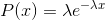
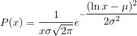

torch.Tensor
译者：@Sylvester、@那伊抹微笑
校对者：@Sariel
torch.Tensor是一种包含单一数据类型元素的多维矩阵.
Torch 定义了七种 CPU tensor 类型和八种 GPU tensor 类型:
| Data type | CPU tensor | GPU tensor |
|---|---|---|
| 32-bit floating point | torch.FloatTensor |
torch.cuda.FloatTensor |
| 64-bit floating point | torch.DoubleTensor |
torch.cuda.DoubleTensor |
| 16-bit floating point | torch.HalfTensor |
torch.cuda.HalfTensor |
| 8-bit integer (unsigned) | torch.ByteTensor |
torch.cuda.ByteTensor |
| 8-bit integer (signed) | torch.CharTensor |
torch.cuda.CharTensor |
| 16-bit integer (signed) | torch.ShortTensor |
torch.cuda.ShortTensor |
| 32-bit integer (signed) | torch.IntTensor |
torch.cuda.IntTensor |
| 64-bit integer (signed) | torch.LongTensor |
torch.cuda.LongTensor |
torch.Tensor是默认的 tensor 类型(torch.FloatTensor)的简称.
一个 tensor 对象可以从 Python 的 list 或者序列(sequence)构建:
>>> torch.FloatTensor([[1, 2, 3], [4, 5, 6]])
1 2 3
4 5 6
[torch.FloatTensor of size 2x3]
一个空的 tensor 对象可以通过所指定的大小来构建:
>>> torch.IntTensor(2, 4).zero_()
0 0 0 0
0 0 0 0
[torch.IntTensor of size 2x4]
可以通过 Python 的索引和切片方式来获取或修改 tensor 对象的内容:
>>> x = torch.FloatTensor([[1, 2, 3], [4, 5, 6]])
>>> print(x[1][2])
6.0
>>> x[0][1] = 8
>>> print(x)
1 8 3
4 5 6
[torch.FloatTensor of size 2x3]
每一个 tensor 对象都有一个相应的 torch.Storage 用来保存数据. tensor 类提供了一个存储的多维的, 有 跨度(strided) 的视图, 并且在视图上定义了数值运算.
注解：
会改变 tensor 对象的函数方法名, 其使用了一个下划线后缀作为标识. 比如, torch.FloatTensor.abs_() 会在原地(in-place)计算绝对值并返回改变后的 tensor. 而 torch.FloatTensor.abs() 会在一个新建的 tensor 中计算结果.
class torch.Tensor
class torch.Tensor(*sizes)
class torch.Tensor(size)
class torch.Tensor(sequence)
class torch.Tensor(ndarray)
class torch.Tensor(tensor)
class torch.Tensor(storage)
可以通过提供大小或者数据来创建一个新的 tensor 对象.
如果没有提供参数, 将返回一个空的零维的 tensor. 如果提供了 numpy.ndarray, torch.Tensor, 或者 torch.Storage 作为参数, 其将返回一个与参数共享数据的 tensor 对象. 如果提供一个 Python 序列 (sequence) 作为参数, 将返回从序列的副本中创建的一个新的 tensor 对象.
abs() → Tensor
请查看 torch.abs()
abs_() → Tensor
abs() 的 in-place 运算形式
acos() → Tensor
请查看 torch.acos()
acos_() → Tensor
acos() 的 in-place 运算形式
add(value)
请查看 torch.add()
add_(value)
add() 的 in-place 运算形式
addbmm(beta=1, mat, alpha=1, batch1, batch2) → Tensor
请查看 torch.addbmm()
addbmm_(beta=1, mat, alpha=1, batch1, batch2) → Tensor
addbmm() 的 in-place 运算形式
addcdiv(value=1, tensor1, tensor2) → Tensor
请查看 torch.addcdiv()
addcdiv_(value=1, tensor1, tensor2) → Tensor
addcdiv() 的 in-place 运算形式
addcmul(value=1, tensor1, tensor2) → Tensor
请查看 torch.addcmul()
addcmul_(value=1, tensor1, tensor2) → Tensor
addcmul() 的 in-place 运算形式
addmm(beta=1, mat, alpha=1, mat1, mat2) → Tensor
请查看 torch.addmm()
addmm_(beta=1, mat, alpha=1, mat1, mat2) → Tensor
addmm() 的 in-place 运算形式
addmv(beta=1, tensor, alpha=1, mat, vec) → Tensor
请查看 torch.addmv()
addmv_(beta=1, tensor, alpha=1, mat, vec) → Tensor
addmv() 的 in-place 运算形式
addr(beta=1, alpha=1, vec1, vec2) → Tensor
请查看 torch.addr()
addr_(beta=1, alpha=1, vec1, vec2) → Tensor
addr() 的 in-place 运算形式
apply_(callable) → Tensor
将函数 callable 作用于 tensor 的每一个元素, 并将每个元素用 callable 的返回值替换.
注解：
该函数只能在 CPU tensor 中使用, 并且不应该用在有较高性能的要求的代码块中.
asin() → Tensor
请查看 torch.asin()
asin_() → Tensor
asin() 的 in-place 运算形式
atan() → Tensor
请查看 torch.atan()
atan2(other) → Tensor
请查看 torch.atan2()
atan2_(other) → Tensor
atan2() 的 in-place 运算形式
atan_() → Tensor
atan() 的 in-place 运算形式
baddbmm(beta=1, alpha=1, batch1, batch2) → Tensor
请查看 torch.baddbmm()
baddbmm_(beta=1, alpha=1, batch1, batch2) → Tensor
baddbmm() 的 in-place 运算形式
bernoulli() → Tensor
bernoulli_() → Tensor
bernoulli() 的 in-place 运算形式
bmm(batch2) → Tensor
请查看 torch.bmm()
byte()
将这个 tensor 转换为 byte 类型
cauchy_(median=0, sigma=1, *, generator=None) → Tensor
用柯西分布得到的数值来填充 tensor 中的元素:

ceil() → Tensor
请查看 torch.ceil()
ceil_() → Tensor
ceil() 的 in-place 运算形式
char()
将这个 tensor 转换为 char 类型
chunk(n_chunks, dim=0)
将 tensor 分解成 tensor 元组.
请查看 torch.chunk().
clamp(min, max) → Tensor
请查看 torch.clamp()
clamp_(min, max) → Tensor
clamp() 的 in-place 运算形式
clone() → Tensor
返回与原 tensor 具有相同大小和数据类型的 tensor.
contiguous() → Tensor
返回一个内存连续的有相同数据的 tensor, 如果原 tensor 内存连续则返回原 tensor.
copy_(src, async=False, broadcast=True) → Tensor
将 src 中的元素复制到这个 tensor 中并返回这个 tensor
如果 broadcast 是 True, 源 tensor 一定和这个 tensor broadcastable. 另外, 源 tensor 的元素数量应该和这个 tensor 的元素个数一致. 源 tensor 可以是另一种数据类型, 或者在别的的设备上.
参数：
src (Tensor)– 被复制的源 tensorasync (bool)– 如果值为True并且这个复制操作在 CPU 和 GPU 之间进行, 则拷贝的副本与源信息可能会出现异步(asynchronously). 对于其他类型的复制操作, 这个参数不起作用.broadcast (bool)– 如果值为True,src将广播基础的 tensor 的形状.
cos() → Tensor
请查看 torch.cos()
cos_() → Tensor
cos() 的 in-place 运算形式
cosh() → Tensor
请查看 torch.cosh()
cosh_() → Tensor
cosh() 的 in-place 运算形式
cpu()
如果此 tensor 不在CPU上, 则返回此 tensor 的CPU副本
cross(other, dim=-1) → Tensor
请查看 torch.cross()
cuda(device=None, async=False)
返回此对象在 CUDA 内存中的一个副本 .
如果此对象已经在 CUDA 内存中并且在正确的设备上 , 那么不会执行复制操作 , 直接返回原对象 .
参数：
device (int)– 目标 GPU 的 id . 默认值是当前设备 .async (bool)– 如果为True并且源位于锁定内存中 , 则副本相对于主机是异步的 . 否则此参数不起效果 .
cumprod(dim) → Tensor
请查看 torch.cumprod()
cumsum(dim) → Tensor
请查看 torch.cumsum()
data_ptr() → int
返回 tensor 第一个元素的地址.
diag(diagonal=0) → Tensor
请查看 torch.diag()
dim() → int
返回 tensor 的维数.
dist(other, p=2) → float
请查看 torch.dist()
div(value)
请查看 torch.div()
div_(value)
div() 的 in-place 运算形式
dot(tensor2) → float
请查看 torch.dot()
double()
将这个 tensor 转换为 double 类型
eig(eigenvectors=False) -> (Tensor, Tensor)
请查看 torch.eig()
element_size() → int
返回单个元素的字节大小.
示例：
>>> torch.FloatTensor().element_size()
4
>>> torch.ByteTensor().element_size()
1
eq(other) → Tensor
请查看 torch.eq()
eq_(other) → Tensor
eq() 的 in-place 运算形式
equal(other) → bool
请查看 torch.equal()
erf() → Tensor
请查看 torch.erf()
erf_()
erfinv() → Tensor
请查看 torch.erfinv()
erfinv_()
exp() → Tensor
请查看 torch.exp()
exp_() → Tensor
exp() 的 in-place 运算形式
expand(*sizes) → Tensor
返回 tensor 单个维度扩展到大的一个新的视图.
传递 -1 作为一个维度的大小, 表示这个维度的大小不做改变.
Tensor 也可以扩展到一个很大的维数, 新添加的维度将放在前面. (对于新的维度, 大小不能设置为 -1 .)
扩展一个 tensor 不是分配一个新的内存, 而只是在这个存在的 tensor 上, 通过设置 stride 为 0, 创建一个新的某个维度从 1 扩展到很大的视图. 任何大小为 1 的维度, 在不用重新分配内存的情况下, 可以扩展到随意任何一个值.
参数：sizes (torch.Size 或 int...) – 期望扩展的大小
示例：
>>> x = torch.Tensor([[1], [2], [3]])
>>> x.size()
torch.Size([3, 1])
>>> x.expand(3, 4)
1 1 1 1
2 2 2 2
3 3 3 3
[torch.FloatTensor of size 3x4]
>>> x.expand(-1, 4) # -1 means not changing the size of that dimension
1 1 1 1
2 2 2 2
3 3 3 3
[torch.FloatTensor of size 3x4]
expand_as(tensor)
将此 tensor 展开为指定 tensor 的大小.
这相当于:
self.expand(tensor.size())
exponential_(lambd=1, *, generator=None) → Tensor
将该 tensor 用指数分布得到的元素填充:

fill_(value) → Tensor
将该 tensor 用指定的数值填充.
float()
将这个 tensor 转换为 float 类型
floor() → Tensor
请查看 torch.floor()
floor_() → Tensor
floor() 的 in-place 运算形式
fmod(divisor) → Tensor
请查看 torch.fmod()
fmod_(divisor) → Tensor
fmod() 的 in-place 运算形式
frac() → Tensor
请查看 torch.frac()
frac_() → Tensor
frac() 的 in-place 运算形式
gather(dim, index) → Tensor
请查看 torch.gather()
ge(other) → Tensor
请查看 torch.ge()
ge_(other) → Tensor
ge() 的 in-place 运算形式
gels(A) → Tensor
请查看 torch.gels()
geometric_(p, *, generator=None) → Tensor
将该 tensor 用几何分布得到的元素填充:
geqrf() -> (Tensor, Tensor)
请查看 torch.geqrf()
ger(vec2) → Tensor
请查看 torch.ger()
gesv(A) → Tensor, Tensor
请查看 torch.gesv()
gt(other) → Tensor
请查看 torch.gt()
gt_(other) → Tensor
gt() 的 in-place 运算形式
half()
将这个 tensor 转换为 half-precision float 类型
histc(bins=100, min=0, max=0) → Tensor
请查看 torch.histc()
index(m) → Tensor
用一个二进制的掩码或沿着一个给定的维度从 tensor 中选取元素. tensor.index(m) 等同于 tensor[m].
参数：m (int 或 ByteTensor 或 slice) – 用来选取元素的维度或掩码
index_add_(dim, index, tensor) → Tensor
按参数 index 给出的索引序列, 将参数 tensor 中的元素加到原来的 tensor 中. 参数 tensor 的尺寸必须严格地与原 tensor 匹配, 否则会发生错误.
参数：
dim (int)– 索引 index 所指向的维度index (LongTensor)– 从参数 tensor 中选取数据的索引序列tensor (Tensor)– 包含需要相加的元素的 tensor
示例：
>>> x = torch.Tensor([[1, 1, 1], [1, 1, 1], [1, 1, 1]])
>>> t = torch.Tensor([[1, 2, 3], [4, 5, 6], [7, 8, 9]])
>>> index = torch.LongTensor([0, 2, 1])
>>> x.index_add_(0, index, t)
>>> x
2 3 4
8 9 10
5 6 7
[torch.FloatTensor of size 3x3]
index_copy_(dim, index, tensor) → Tensor
按参数 index 给出的索引序列, 将参数 tensor 中的元素复制到原来的 tensor 中. 参数 tensor 的尺寸必须严格地与原 tensor 匹配, 否则会发生错误.
参数：
dim (int)– 索引 index 所指向的维度index (LongTensor)– 从参数 tensor 中选取数据的索引序列tensor (Tensor)– 包含需要复制的元素的 tensor
示例：
>>> x = torch.Tensor(3, 3)
>>> t = torch.Tensor([[1, 2, 3], [4, 5, 6], [7, 8, 9]])
>>> index = torch.LongTensor([0, 2, 1])
>>> x.index_copy_(0, index, t)
>>> x
1 2 3
7 8 9
4 5 6
[torch.FloatTensor of size 3x3]
index_fill_(dim, index, val) → Tensor
按参数 index 给出的索引序列, 将原 tensor 中的元素用 val 填充.
参数：
dim (int)– 索引 index 所指向的维度index (LongTensor)– 从参数 val 中选取数据的索引序列val (float)– 用来填充的值
示例：
>>> x = torch.Tensor([[1, 2, 3], [4, 5, 6], [7, 8, 9]])
>>> index = torch.LongTensor([0, 2])
>>> x.index_fill_(1, index, -1)
>>> x
-1 2 -1
-1 5 -1
-1 8 -1
[torch.FloatTensor of size 3x3]
index_select(dim, index) → Tensor
int()
将这个 tensor 转换为 int 类型
inverse() → Tensor
请查看 torch.inverse()
is_contiguous() → bool
以 C 语言的内存模型为原则, 如果该 tensor 在内如果该 tensor 在内存中连续的, 则返回 True.
is_cuda
is_pinned()
如果 tensor 驻留在固定内存中, 则返回 true
is_set_to(tensor) → bool
如果此对象从 Torch C API 引用的 THTensor 对象与参数 tensor 引用的对象一致, 则返回True.
is_signed()
kthvalue(k, dim=None, keepdim=False) -> (Tensor, LongTensor)
请查看 torch.kthvalue()
le(other) → Tensor
请查看 torch.le()
le_(other) → Tensor
le() 的 in-place 运算形式
lerp(start, end, weight)
请查看 torch.lerp()
lerp_(start, end, weight)
lerp() 的 in-place 运算形式
log() → Tensor
请查看 torch.log()
log1p() → Tensor
请查看 torch.log1p()
log1p_() → Tensor
log1p() 的 in-place 运算形式
log_() → Tensor
log() 的 in-place 运算形式
log_normal_(mean=1, std=2, *, generator=None)
将该 tensor 用均值为 mean (µ), 标准差为 std (σ) 的对数正态分布得到的元素填充. 要注意 mean 和 stdv 是基本正态分布的均值和标准差, 不是返回的分布:

long()
将这个 tensor 转换为 long 类型
lt(other) → Tensor
请查看 torch.lt()
lt_(other) → Tensor
lt() 的 in-place 运算形式
map_(tensor, callable)
将 callable 作用于本 tensor 和参数 tensor 中的每一个元素, 并将结果存放在本 tensor 中. 本 tensor 和参数 tensor 都必须是 broadcastable.
callable应该有下列标志:```py def callable(a, b) -> number
```
masked_scatter_(mask, source)
复制 source 的元素到本 tensor 被mask中值为 1 的元素标记的位置中. mask 的形状和本 tensor 的形状必须是可广播的 ( broadcastable). source 中元素的个数最少为 mask 中值为1的元素的个数.
参数：
mask (ByteTensor)– 二进制掩码source (Tensor)– 复制的源 tensor
注解：
mask 作用于 self 自身的 tensor, 而不是参数 source 的 tensor.
masked_fill_(mask, value)
将本 tensor 被 mask 中值为 1 的元素标记的位置, 用 value 填充. mask 的形状和本 tensor 的形状必须是可广播的 (broadcastable).
Fills elements of this tensor with value where mask is one.
参数：
mask (ByteTensor)– 二进制掩码value (float)– 用来填充的值
masked_select(mask) → Tensor
matmul(other)
两个 tensor 的矩阵乘积.
请查看 torch.matmul().
max(dim=None, keepdim=False) -> float or (Tensor, Tensor)
请查看 torch.max()
mean(dim=None, keepdim=False) -> float or (Tensor, Tensor)
请查看 torch.mean()
median(dim=None, keepdim=False) -> (Tensor, LongTensor)
请查看 torch.median()
min(dim=None, keepdim=False) -> float or (Tensor, Tensor)
请查看 torch.min()
mm(mat2) → Tensor
请查看 torch.mm()
mode(dim=None, keepdim=False) -> (Tensor, LongTensor)
请查看 torch.mode()
mul(value) → Tensor
请查看 torch.mul()
mul_(value)
mul() 的 in-place 运算形式
multinomial(num_samples, replacement=False, *, generator=None)
mv(vec) → Tensor
请查看 torch.mv()
narrow(dimension, start, length) → Tensor
返回一个本 tensor 经过缩小后的 tensor. 维度 dim 缩小范围是 start 到 start + length. 原 tensor 与返回的 tensor 共享相同的底层存储.
参数：
dimension (int)– 需要缩小的维度start (int)– 起始维度length (int)–
示例：
>>> x = torch.Tensor([[1, 2, 3], [4, 5, 6], [7, 8, 9]])
>>> x.narrow(0, 0, 2)
1 2 3
4 5 6
[torch.FloatTensor of size 2x3]
>>> x.narrow(1, 1, 2)
2 3
5 6
8 9
[torch.FloatTensor of size 3x2]
ndimension() → int
dim() 的另一种表示
ne(other) → Tensor
请查看 torch.ne()
ne_(other) → Tensor
ne() 的 in-place 运算形式
neg() → Tensor
请查看 torch.neg()
neg_() → Tensor
neg() 的 in-place 运算形式
nelement() → int
numel() 的另一种表示
new(*args, **kwargs)
构造相同数据类型的新 tensor.
nonzero() → LongTensor
请查看 torch.nonzero()
norm(p=2, dim=None, keepdim=False) → float
请查看 torch.norm()
normal_(mean=0, std=1, *, generator=None)
将 tensor 用均值为 mean 和标准差为std的正态分布填充.
numel() → int
请查看 torch.numel()
numpy() → ndarray
将该 tensor 以 NumPy ndarray 的形式返回. 两者共享相同的底层存储. 原 tensor 的改变会影响到 ndarray, 反之也一样.
orgqr(input2) → Tensor
请查看 torch.orgqr()
ormqr(input2, input3, left=True, transpose=False) → Tensor
请查看 torch.ormqr()
permute(*dims)
排列该 tensor 的尺寸.
参数：*dims (int...) – 按所期望的维数排序
示例：
>>> x = torch.randn(2, 3, 5)
>>> x.size()
torch.Size([2, 3, 5])
>>> x.permute(2, 0, 1).size()
torch.Size([5, 2, 3])
pin_memory()
如果 tensor 尚未固定, 则将 tensor 复制到固定内存.
potrf(upper=True) → Tensor
请查看 torch.potrf()
potri(upper=True) → Tensor
请查看 torch.potri()
potrs(input2, upper=True) → Tensor
请查看 torch.potrs()
pow(exponent)
请查看 torch.pow()
pow_(exponent)
pow() 的 in-place 运算形式
prod(dim=None, keepdim=False) → float
请查看 torch.prod()
pstrf(upper=True, tol=-1) -> (Tensor, IntTensor)
请查看 torch.pstrf()
put_(indices, tensor, accumulate=False) → Tensor
复制 tensor 内的元素到 indices 指定的位置. 为了达到索引的目的, self tensor 被当做一维 (1D) 的 tensor.
如果 accumulate 是 True, tensor 内的元素累加到 self 中. 如果 accumulate 是 False, 在索引包含重复的值时, 行为未定义.
参数：
indices (LongTensor)– self 的索引tensor (Tensor)– 包含需要复制值的 tensoraccumulate (bool)– 如果是 True, 元素累加到 self
示例：
>>> src = torch.Tensor([[4, 3, 5],
... [6, 7, 8]])
>>> src.put_(torch.LongTensor([1, 3]), torch.Tensor([9, 10]))
4 9 5
10 7 8
[torch.FloatTensor of size 2x3]
qr() -> (Tensor, Tensor)
请查看 torch.qr()
random_(from=0, to=None, *, generator=None)
将 tensor 用在 [from, to - 1] 上的离散均匀分布进行填充. 如果没有特别说明, 填入的值由本 tensor 的数据类型限定范围. 但是, 对于浮点类型 (floating point types), 如果没有特别说明, 取值范围是0, 2^mantissa, 以确保每个数都是可表示的. 例如, torch.DoubleTensor(1).random_() 将均匀分布在[0, 2^53].
reciprocal() → Tensor
reciprocal_() → Tensor
reciprocal() 的 in-place 运算形式
remainder(divisor) → Tensor
remainder_(divisor) → Tensor
remainder() 的 in-place 运算形式
renorm(p, dim, maxnorm) → Tensor
请查看 torch.renorm()
renorm_(p, dim, maxnorm) → Tensor
renorm() 的 in-place 运算形式
repeat(*sizes)
沿着指定的尺寸重复 tensor.
和 expand() 不同, 这个函数复制 tensor 的数据.
参数：*sizes (torch.Size 或 int...) – 沿每个维度重复 tensor 的次数
示例：
>>> x = torch.Tensor([1, 2, 3])
>>> x.repeat(4, 2)
1 2 3 1 2 3
1 2 3 1 2 3
1 2 3 1 2 3
1 2 3 1 2 3
[torch.FloatTensor of size 4x6]
>>> x.repeat(4, 2, 1).size()
torch.Size([4, 2, 3])
resize_(*sizes)
将 tensor 的大小调整为指定的大小. 如果元素个数比当前的内存大小大, 就将底层存储大小调整为与新元素数目一致的大小. 如果元素个数比当前内存小, 则底层存储不会被改变. 原来tensor中被保存下来的元素将保持不变, 但新内存将不会被初始化.
参数：*sizes (torch.Size 或 int...) – 期望的大小
示例：
>>> x = torch.Tensor([[1, 2], [3, 4], [5, 6]])
>>> x.resize_(2, 2)
>>> x
1 2
3 4
[torch.FloatTensor of size 2x2]
resize_as_(tensor)
将本 tensor 的大小调整为参数 tensor 的大小. 等效于:
self.resize_(tensor.size())
round() → Tensor
请查看 torch.round()
round_() → Tensor
round() 的 in-place 运算形式
rsqrt() → Tensor
请查看 torch.rsqrt()
rsqrt_() → Tensor
rsqrt() 的 in-place 运算形式
scatter_(dim, index, src) → Tensor
将 src 中的所有值按照 index 确定的索引顺序写入本 tensor 中. 给定的 dim 声明索引的维度, dim 按照 gather() 中的描述的规则来确定.
注意, 关于 gather, index 的值必须是 0 到 (self.size(dim) -1) 区间, 而且, 属于同一维度的一行的值必须是唯一的.
参数：
dim (int)– 索引的轴向index (LongTensor)– 散射元素的索引指数src (Tensor 或 float)– 散射的源元素
示例：
>>> x = torch.rand(2, 5)
>>> x
0.4319 0.6500 0.4080 0.8760 0.2355
0.2609 0.4711 0.8486 0.8573 0.1029
[torch.FloatTensor of size 2x5]
>>> torch.zeros(3, 5).scatter_(0, torch.LongTensor([[0, 1, 2, 0, 0], [2, 0, 0, 1, 2]]), x)
0.4319 0.4711 0.8486 0.8760 0.2355
0.0000 0.6500 0.0000 0.8573 0.0000
0.2609 0.0000 0.4080 0.0000 0.1029
[torch.FloatTensor of size 3x5]
>>> z = torch.zeros(2, 4).scatter_(1, torch.LongTensor([[2], [3]]), 1.23)
>>> z
0.0000 0.0000 1.2300 0.0000
0.0000 0.0000 0.0000 1.2300
[torch.FloatTensor of size 2x4]
select(dim, index) → Tensor or number
沿着 dim 给定的维度, 按照 index 切片. 如果这个 tensor 是一维的, 返回一个数字. 否则, 返回一个给定维度已经被移除的 tensor.
参数：
dim (int)– 切片的维度index (int)– 用来选取的索引
注解：
select等效于切片. 例如, tensor.select(0, index) 等效于 tensor[index] 和 tensor.select(2, index) 等效于 tensor[:,:,index].
set_(source=None, storage_offset=0, size=None, stride=None)
设置底层存储, 大小, 和步长. 如果 source 是一个 tensor 对象, 本 tensor 和该 tensor 共享底层存储, 并且大小和步长一样. 在其中一个 tensor 中改变元素, 会音响到另一个 tensor.
如果 source 是一个 Storage, 则将设置底层内存, 偏移量, 大小和步长.
参数：
source (Tensor 或 Storage)– 用到的 tensor 或 storagestorage_offset (int)– storage 的偏移量size (torch.Size)– 期望的大小. 默认为源 tensor 的大小.stride (tuple)– 期望的步长. 默认为 C 相邻内存的步长.
share_memory_()
将底层存储移到共享内存.
如果底层存储已经在共享内存和CUDA tensor 中, 则这是无操作. 共享内存中的 tensor 不能调整大小.
short()
将这个 tensor 转换为 short 类型
sigmoid() → Tensor
请查看 torch.sigmoid()
sigmoid_() → Tensor
sigmoid() 的 in-place 运算形式
sign() → Tensor
请查看 torch.sign()
sign_() → Tensor
sign() 的 in-place 运算形式
sin() → Tensor
请查看 torch.sin()
sin_() → Tensor
sin() 的 in-place 运算形式
sinh() → Tensor
请查看 torch.sinh()
sinh_() → Tensor
sinh() 的 in-place 运算形式
size() → torch.Size
返回 tensor 的大小. 返回的值是 tuple 的子类.
示例：
>>> torch.Tensor(3, 4, 5).size()
torch.Size([3, 4, 5])
sort(dim=None, descending=False) -> (Tensor, LongTensor)
请查看 torch.sort()
split(split_size, dim=0)
将 tensor 分解成 tensor 元组.
See torch.split().
sqrt() → Tensor
请查看 torch.sqrt()
sqrt_() → Tensor
sqrt() 的 in-place 运算形式
squeeze(dim=None)
请查看 torch.squeeze()
squeeze_(dim=None)
squeeze() 的 in-place 运算形式
std(dim=None, unbiased=True, keepdim=False) → float
请查看 torch.std()
storage() → torch.Storage
返回底层存储
storage_offset() → int
按照储存元素个数的偏移返回 tensor 在底层存储中的偏移量(不是按照字节计算).
示例：
>>> x = torch.Tensor([1, 2, 3, 4, 5])
>>> x.storage_offset()
0
>>> x[3:].storage_offset()
3
classmethod storage_type()
stride(dim) → tuple or int
返回 tesnor 的步长. 步长是指按照 dim 指定的维度, 从一个元素到下一个元素需要跳跃的距离. 当没有指定维度, 会计算所有维度的步长, 并返回一个 tuple. 当给定维度时, 返回这个维度的步长.
参数：dim (int) – 期望的需要计算步长的维度.
示例：
>>> x = torch.Tensor([[1, 2, 3, 4, 5], [6, 7, 8, 9, 10]])
>>> x.stride()
(5, 1)
>>>x.stride(0)
5
>>> x.stride(-1)
1
sub(value, other) → Tensor
从 tensor 中抽取一个标量或张量. 如果 value 和 other 都是给定的, 则在使用之前 other的每一个元素都会被 value 缩放.
如果 other 是一个tensor, other 的形状必须于基础 tensor 的形状是可广播的 ( broadcastable).
sub_(x) → Tensor
sub() 的 in-place 运算形式
sum(dim=None, keepdim=False) → float
请查看 torch.sum()
svd(some=True) -> (Tensor, Tensor, Tensor)
请查看 torch.svd()
symeig(eigenvectors=False, upper=True) -> (Tensor, Tensor)
请查看 torch.symeig()
t() → Tensor
请查看 torch.t()
t_() → Tensor
t() 的 in-place 运算形式
take(indices) → Tensor
请查看 torch.take()
tan()
tan_() → Tensor
tan() 的 in-place 运算形式
tanh() → Tensor
请查看 torch.tanh()
tanh_() → Tensor
tanh() 的 in-place 运算形式
tolist()
返回此 tensor 的嵌套列表表示.
topk(k, dim=None, largest=True, sorted=True) -> (Tensor, LongTensor)
请查看 torch.topk()
trace() → float
请查看 torch.trace()
transpose(dim0, dim1) → Tensor
transpose_(dim0, dim1) → Tensor
transpose() 的 in-place 运算形式
tril(k=0) → Tensor
请查看 torch.tril()
tril_(k=0) → Tensor
tril()
triu(k=0) → Tensor
请查看 torch.triu()
triu_(k=0) → Tensor
triu() 的 in-place 运算形式
trtrs(A, upper=True, transpose=False, unitriangular=False) -> (Tensor, Tensor)
请查看 torch.trtrs()
trunc() → Tensor
请查看 torch.trunc()
trunc_() → Tensor
trunc() 的 in-place 运算形式
type(new_type=None, async=False)
如果没有指定 new_type 则返回该类型 , 否则将此对象转换为指定类型 .
如果已经是正确的类型 , 则不执行复制并直接返回原对象 .
参数：
new_type (type 或 string)– 期望的类型async (bool)– 如果为True, 并且源在锁定内存中而目标在GPU中 , 则副本将与主机异步执行 , 反之亦然 . 否则此参数不起效果 .
type_as(tensor)
将此张量转换为给定 tensor 的类型.
如果 tensor 已经是正确的类型, 这是一个无用的操作. 这相当于:
self.type(tensor.type())
Params: tensor (Tensor): tensor 具有所需的类型
unfold(dim, size, step) → Tensor
返回一个在 dim 维度上包含所有 size 大小切片的 tensor.
step说明两个切片之间的步长.
如果 sizedim 是原tensor在 dim 维度原来的大小, 则返回的 tensor 在 dim 维度的大小是 (sizedim - size) / step + 1
一个额外的切片大小的维度已经添加在返回的 tensor 中.
参数：
dim (int)– 需要展开的维度size (int)– 每一个分片需要展开的大小step (int)– 相邻分片之间的步长
示例：
>>> x = torch.arange(1, 8)
>>> x
1
2
3
4
5
6
7
[torch.FloatTensor of size 7]
>>> x.unfold(0, 2, 1)
1 2
2 3
3 4
4 5
5 6
6 7
[torch.FloatTensor of size 6x2]
>>> x.unfold(0, 2, 2)
1 2
3 4
5 6
[torch.FloatTensor of size 3x2]
uniform_(from=0, to=1) → Tensor
将 tensor 用从均匀分布中抽样得到的值填充:
unsqueeze(dim)
unsqueeze_(dim)
unsqueeze() 的 in-place 运算形式
var(dim=None, unbiased=True, keepdim=False) → float
请查看 torch.var()
view(*args) → Tensor
返回一个有相同数据但大小不同的新的 tensor.
返回的 tensor 与原 tensor 共享相同的数据, 一定有相同数目的元素, 但大小不同. 一个 tensor 必须是连续的 ( contiguous() ) 才能被查看.
参数：args (torch.Size 或 int...) – 期望的大小
示例：
>>> x = torch.randn(4, 4)
>>> x.size()
torch.Size([4, 4])
>>> y = x.view(16)
>>> y.size()
torch.Size([16])
>>> z = x.view(-1, 8) # the size -1 is inferred from other dimensions
>>> z.size()
torch.Size([2, 8])
view_as(tensor)
将该 tensor 作为指定的 tensor 返回查看.
这相当于:
self.view(tensor.size())
zero_()
用0填充该 tensor.
class torch.ByteTensor
下面这些函数方法只存在于 torch.ByteTensor.
all() → bool
如果 tensor 里的所有元素都是非零的, 则返回 True, 否在返回 False.
any() → bool
如果 tensor 里的存在元素是非零的, 则返回 True, 否在返回 False.